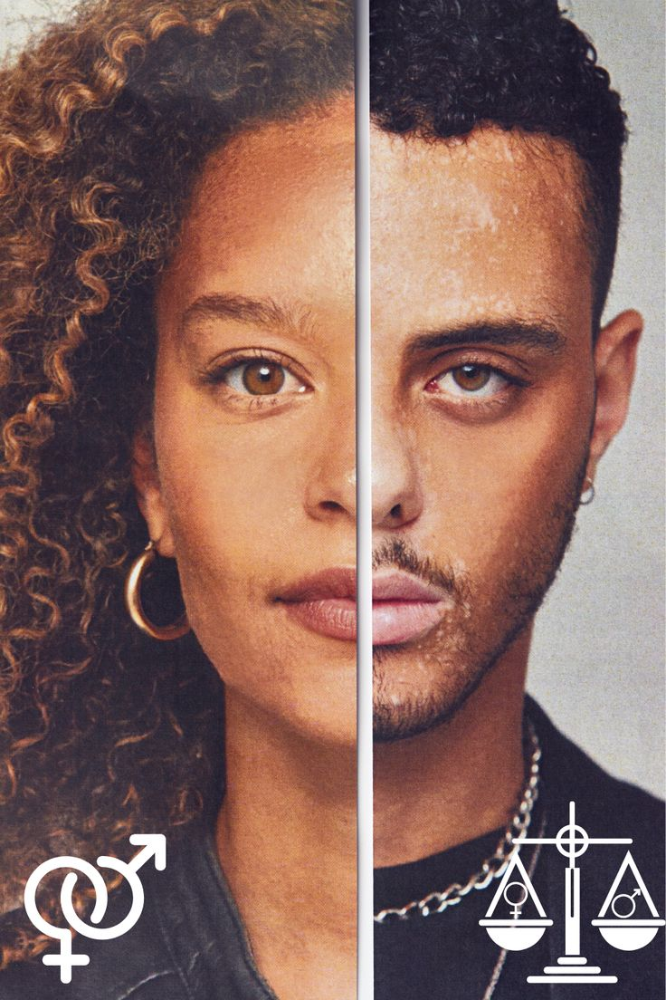
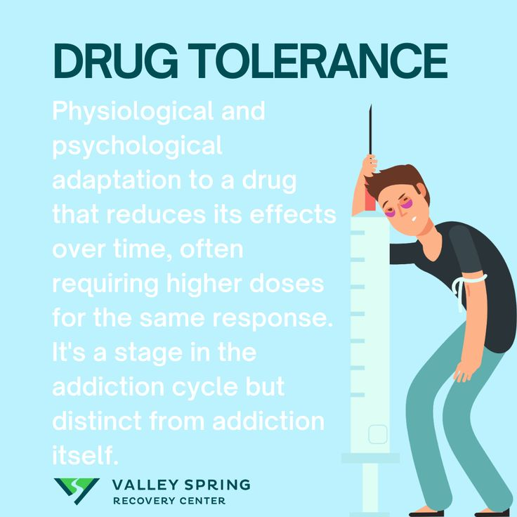
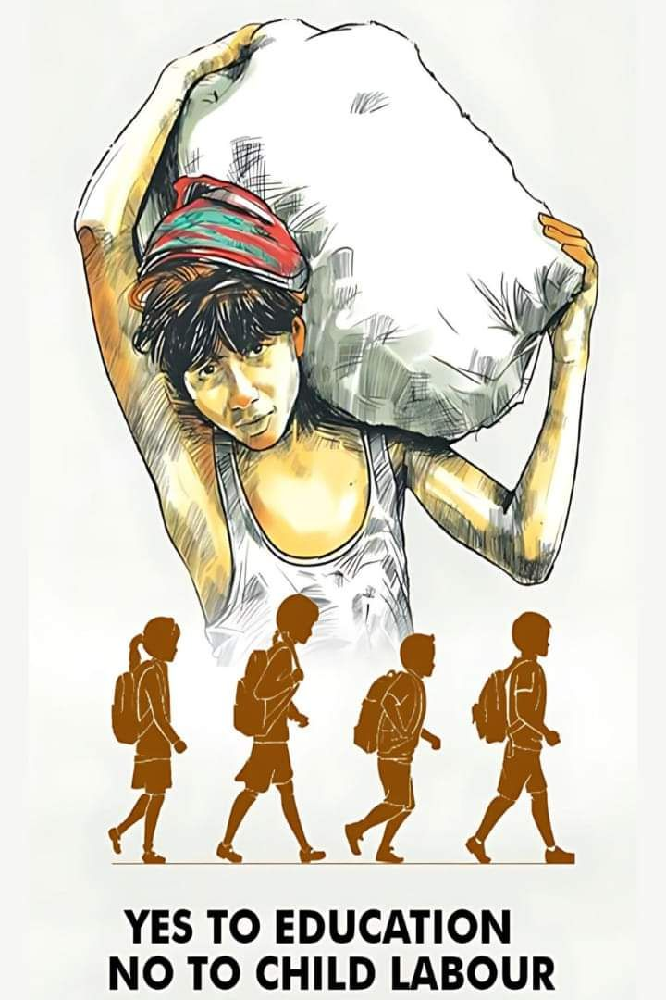

YOUTH ANNOUNCEMENTS WEBSITE
TEKNOLOJIA INAWAATHIRIJE
WATOTO WAKO?
----------
Kwa sababu ya uwezo wao wa kutumia teknolojia na programu mpya, mara nyingi watoto huitwa "kizazi cha kidigitali," lakini si rahisi kwa watu wazima kutumia programu hizo.
wanakuwa waraibu wa vifaa vya kielektroni. wanaweza kunyanyaswa au kuwanyanyasa wengine mtandaoni. wanaweza kutazama ponografia kwa urahisi, iwe wamekusudia au la.{kind=link}
welcome to our certificate of membership web page. Here you will find certificates and award certificates available at church parish for appointment
UNACHOPASWA KUJUA

Uraibu
Baadhi ya mambo yanayopatikana mtandaoni kama vile michezo ya video, yamekusudiwa kuwafanya watu wawe waraibu.
Hilo halishangazi. Kitabu kimoja(Reclaiming Conversation) kinasema hivi: "programu kwenye simu zetu zimekusudiwa kutufanya tutumie simu zetu wakati wowote." Kadiri tunavyotumia programu hizo kwa muda mrefu, ndivyo watengezaji wake wanavyopata faida zaidi.
Je, watoto wako wanatumia vifaa vya kielektroni kupita kiasi?Unaweza kuwasaidiaje watumie muda wao kwa njia bora zaidi?
Kunyanyaswa Au Kuwanyanyasa Wengine Mtandaoni.
Baadhi ya watu huwa wakali, wenye tabia mbaya, na wasiojali hisia za wengine wanapotumia mitandao-mambo yanayofanya wawanyanyase wengine.
Watu wengine wanatumia vibaya mitandao ya kijamii kwa sababu wanataka wajulikane au wawe maarufu.
Au mtu anaweza kuhisi ametwengwa na wengine-/kwa mfano, ikiwa ataona mtandaoni marafiki wake wote wamealikwa kwenye tafrija lakini yeye hakualikwa huenda akafikiri amenyanyaswa.
JAMBO LA KUFIKIRIA:Je, watoto wako wananyanyasa wengine mtandaoni?(Waefeso 4:31) Wanakabilianaje na hisia za kutengwa na wengine?

PONOGRAFIA
Ni rahisi sana kupata au kuona mambo machafu mtandaoni. Wazazi wanapaswa kutambua kwamba ingawa baadhi ya programu huwasaidia kudhibiti mambo ambayo watoto wao hutazama, haziwezi kudhibiti mambo yote, na bado watoto wanaweza kuona mambo machafu.
Kutumia au kupokea ujumbe au picha chafu, mara nyingi kupitia simu ya mkononi, kunaweza kuwa kosa kisheria. Katika visa fulani, kwa kutegemea sheria za eneo ambalo mtu anaishi au umri wake, mtu anayetuma ujumbe au picha chafu anaweza kushtakiwa kwa kosa la kusambaza ponografia ya watoto.
JAMBO LA KUFIKIRIA:Unaweza kumsaidiaje mtoto wako aepuke kishawishi cha kutazama au kutumia picha chafu mtandaoni?
WAEFESO 5: 3, 4.
UNACHOWEZA KUFANYA
WAZOEZE WATOTO WAKO
Ingawa watoto wanaweza kutumia teknolojia kwa urahisi, bado wanahitaji mwongozo. Kitabu kinachoitwa "Indistracttable"kinasema kwamba kumpatia mtoto wako simu ya mkononi au kifaa kingine cha kielektroni kabla hajwa na uwezo wa kukitumia kwa njia inayofaa, ni "jambo la kipumbavu kama kumruhusu mtoto asiyejua kuogelea kutumbukia bwawani."
KANUNI YA BIBILIA:Mzoeze mtoto njia anayopaswa kuifuata; hata atakapozeeka hataiacha. METHALI 22:6,
-----------------------------

--------------------------------
--------------------------------
MASWALI AMBAYO WAZAZI WANAWEZA KUZUNGUMZIA
* Je, tunawaruhus watoto wetu watumie vifaa vya kielektroni kwa sababu hatutaki watusumbue?
* Je, mtoto wetu anahitaji kifaa kilichounganishwa na Intaneti? Ikiwa ndivyo,kwa nini?
* Je, tuna uwezo wa kumnunulia mtoto wetu kifaa kinachotumia Intaneti?
* Je, mtoto wetu anaweza kujizuia anapotumia kifaa chake?
* Je, mtoto wetu anawajibika anapofanya makosa?
* Tutamwekea sheria gani?
* Tunawezaje kuhakikisha kwamba mtoto wetu anatumia kifaa chake kwa usawaziko?
KANUNI YA BIBLIA:Watu wakomavu....wamezoeza nguvu zao za utambuzi kwa kuzitumia ili kutofautisha mambo yaliyo sawa na mambo yasiyo sawa. WAEBRANIA 5:14.
LAURETA, NA MUME WAKE, DAVID
Anaitumiaje simu yako?
Anatembelea tovuti gani mtandaoni?
Ni michezo gani ya video anayopenda?
Anatumia vifaa hivyo kwa muda gani?
Wapime watoto wako uone ikiwa wamekomaa na wanweza kujizuia kabla ya kuwapa vifaa vya kielektroni.
Local & cool 😎.